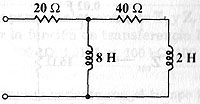
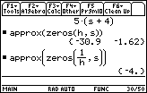
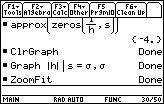
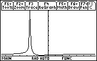

B01 FD analysis: Transfer function, and poles and zeros ploting
Question. Given the following circuit, find function h(s)=vinput/iinput, its poles and zeros, and plot its absolute value vs. s . (Remember that s is a real number).

Solution:
There are different ways to solve this problem using Symbulator. I'll present here the easiest way, using one of the latest tools of Symbulator: thevenin(). This tool will provide us with the Zth, which is the input impedance of the circuit.
Realize that the requested transfer function is really the input impedance of circuit: vinput/iinput
Label nodes and elements. Define a variable containing circuit description. I used this description:
"r20,1,2,20,0; r40,2,3,40,0; l8,2,0,8,0; l2,3,0,2,0"à cir
Run the Thevenin/Norton tool:
sq\thevenin(cir,1,0)
When asked, select FD (frequency domain) analysis.
Now get the impedance (or transferencee function) of the circuit:
Look for the zeros of the function. Since we are not interested in a fraction expression of zero, but in a floating point expression of zero, we ask for approximation.
approx(zeros(h,s))

Look for the poles of the function. Be aware that, since expression has a greater degree of s in the numerator than in the denominator, : and -: are poles of it. Since we are not interested in a fraction expression of poles, but in a floating point expression of poles, we ask for approximation.
approx(zeros(1/h,s))
Now we want to graph h(s)’s absolute magnitude in function of s .


Answer: The answers and graph obtained are the right ones.
Note:
Assume you have to calulate the transfert function of example 7, with Vin=v1-v0 and Vout=v3-v0. Then describe the circuit...
"e1,1,0,Vin,0; r1,1,2,20,0; l1,2,0,8,0; r2,2,3,40,0; l1,3,0,2,0" à cirRun Symbulator’s fd()...
sq\fd(cir)
And v3/v1 gives the requested transfert function. It is that easy!